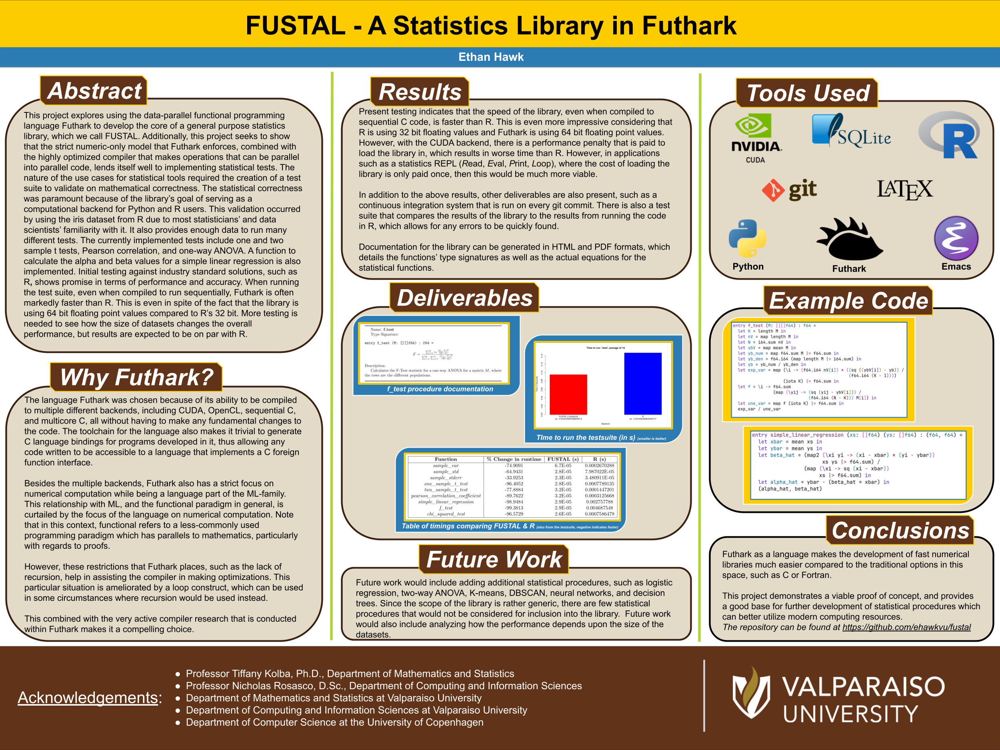

FUSTAL is a statistics library that I wrote as my Senior year project for my data science major at Valparaiso Univeristy. It is written entirely in futhark, which is a functional programming language designed for number crunching. This library also includes a built in test-suite comparing it’s results against R aswell as documentation.
One of the key motivators for this project was to be able to demonstrate that C, C++, and Fortran are not required for this kind of computing, since most popular statistical library backend are written in one of these three languages. There are exceptions to this, such as Haskell’s statistics library, but generally speaking these libraries are written in low level languages.
This is typically the right call, since these languages don’t suffer from the high amounts of runtime overhead that other languages have. However, Futhark presents a little wrinkle in this model since it is designed not as an application language, but rather a library language, which allows it to forgo some of the nicities of more general purpose languages like Haskell, but in exchange allows you to compile your code to be used in other languages using the C foreign function interface.
In addition to being a library focused language, futhark also allows you to trivially compile your code for running on the GPU, with CUDA and OpenCL serving as valid backends, with there being a potential for Vulkan in the future.
The test suite is divided into three parts: the python script, the R script, and the shell script that computes the differences.
Admittedly, most of this could likley have been done in Python, however I did not want to hurt the chances of R by using R through some kind of library wrapper that would run the R code. So instead each test script contains
FUSTAL generally outperforms R when it comes to the core statisitical procedures. It is important to note that all of these benchmarks should be taken with a few heavy grains of salt, since R does provide additional information in addition to the running of statistical tests (such as the p-value, etc).
